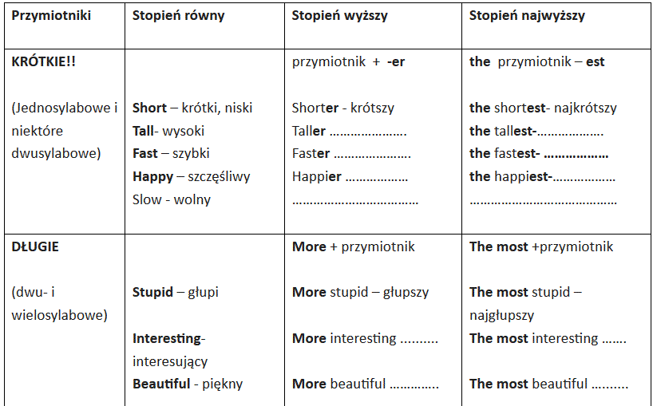

Nauczanie zdalne
Klasa 8A
wychowawca Beata Klimowicz
Pi±tek 24.04.2020r
JÊZYK ANGIELSKI-GRUPA 1I 2
Topic: Revision Unit – Powtórzenie wiadomo¶ci (stopniowanie przymiotników)
Zadanie 1 Proszê przerysowaæ tabelê i przepisaæ w skrócie stopniowanie przymiotników. Uzupe³nij t³umaczenie brakuj±cych wyrazów.

Zadanie 2 Przepisz zdania do zeszytu i przet³umacz je na jêzyk polski.
A car is faster than a bicycle, but a plane is the fastest.
..............................
A car is slower than a plane, but a bicycle is the slowest.
...............................
John is fatter than Kate, but Bill is the fattest.
ZAJECIA REWALIDACYJNE:
USPRAWNIANIE TECHNIK SZKOLNYCH- MATEMATYKA- 1 lekcja Patryk, Klaudia, Amelia)
Rewalidacja - matematyka-24.04.2020r. /uczniowie: K.W. P.S. A.D. /
1. Oblicz pole i objêto¶æ prostopad³o¶cianu o wymiarach a=6cm,b=7cm,c=8cm.
2. Oblicz pole i objêto¶æ sze¶cianu o wymiarach a=12cm.
3. Narysuj dowolny ostros³up.
4. Oblicz a prostopad³o¶cianu wiedz±c, ¿e V=40, b=4, c=5 / w cm/.
Czekam na zadania od wszystkich.
Przyjemnego liczenia. Pozdrawiam p. Zosia.
LOGOPEDIA Daniel, Karol)-1 lekcja
Æwiczenia oddechowe:
oddychaj przez nos (wdech przez nos, wydech przez nos, usta zamkniête),
nabierz powietrza przez nos, wypu¶æ przez usta,
nabierz powietrza przez nos, wypu¶æ przez usta mówi±c jednocze¶nie /szszszszsz/
Æwiczenia usprawniaj±ce narz±dy mowy (ka¿de æwiczenie wykonaj 5 razy):
szeroko otwieraj i zamykaj usta, ziewaj,
ziewaj,
nabierz powietrza przez nos, nadmij policzki, wypu¶æ przez usta,
podnie¶ jêzyk, oprzyj go na górnych dzi±s³ach, uderzaj jêzykiem o podniebienie (kl±skanie),
zaci¶nij wargi i wysuñ do przodu, nastêpnie u¶miechnij siê
Æwiczenia s³uchowe:
usi±d¼, zamknij oczy i nazwij d¼wiêki, które dochodz± z otoczenia
USPRAWNIANIE TECHNIK SZKOLNYCH- JÊZYK POLSKI (Alan, Wanessa, £ukasz, Szymon)-2 lekcja
1. Napisz, jak siê dzi¶ czujesz?
2. Przeczytaj tekst:
3. W ma³ym królestwie na koñcu ¶wiata mieszkali sami szczê¶liwi ludzie. Nie mieli ¿adnych k³opotów, nigdy siê nie k³ócili, cieszyli siê z ka¿dej chwili, bo ka¿da chwila by³a dla nich bardzo szczê¶liwa. Dziwili siê mieszkañcy innych krajów, dlaczego to nie oni s± tacy szczê¶liwi, tylko kto¶ inny. Wreszcie postanowili zrobiæ z tym porz±dek i odebraæ szczê¶cie s±siadom.
4. I podkre¶l w nim : rzeczowniki, przymiotniki i czasowniki.
Czekam na Wasze odpowiedzi.))
SOCJOTERAPIA (Mateusz)

MATEMATYKA
Temat: Pole powierzchni ostros³upów-zadania.
1. Oblicz pole powierzchni ostros³upów prawid³owych czworok±tnych , których
a/ krawêd¼ podstawy ma d³ugo¶æ 6 cm, a krawêd¼ boczna ma d³ugo¶æ 8cm,
b/krawêd¼ podstawy ma d³ugo¶æ 4cm, a krawêd¼ boczna ma d³ugo¶æ 6cm,
c/ krawêd¼ podstawy ma d³ugo¶æ 8cm, a krawêd¼ boczna ma d³ugo¶æ 10cm
2. Pole powierzchni czworo¶cianu foremnego o krawêdzi 2cm jest równe..................
Termin zwrotu pracy z dnia 23 - 24.04.2020r. ---28.04.2020r.
JÊZYK POLSKI
Temat: Czego ch³opcy nauczyli siê od swojego nauczyciela ?
Przeczytaj recenzjê ksi±¿ki N. H. Kleinbaum „Stowarzyszenie umar³ych poetów „
https://sciaga.pl/tekst/105232-106-recenzja-ksiazki-stowarzyszenie-umarlych-poetow
Sporz±d¼ krótk± notatkê z uwzglêdnieniem rady profesora dla uczniów; „Uczyñcie swoje ¿ycie niezwyk³ym”. Pozdrawiam
WOS
Temat: Media i opinia publiczna
Proszê obejrzeæ film:
https://www.youtube.com/watch?v=TZ8KSgonYfY
https://www.youtube.com/watch?v=wpZD6lsSwCI
NOTATKA:
Opinie obywateli nabieraj± szczególnego znaczenia, gdy zostan± zaprezentowane przez mass media, czyli ¶rodki masowego przekazu . Nale¿± do nich :
- telewizja
- Internet
- radio
- prasa
Media s± niezbêdnym elementem ¿ycia publicznego w pañstwie demokratycznym.
Stoj± one na stra¿y zasad demokracji, np. informuj± o ³amaniu prawa przez rz±dz±cych.
Umo¿liwiaj± tak¿e realizacjê jednego z najwa¿niejszych praw obywatelskich – wolno¶ci s³owa.
Media spo³eczno¶ciowe –
Jedn± z przyczyn du¿ej popularno¶ci mediów spo³eczno¶ciowych jest to, ¿e ka¿dy mo¿e za ich po¶rednictwem przedstawiæ swoj± opiniê na dan± sprawê.
Snapchat
Skype
Facebook
Twitter
YouTube
Instagram
EDUKACJA DLA BEZPIECZEÑSTWA
Temat: Urazy ko¶ci i stawów.
W tym temacie zapoznacie siê z takimi urazami jak: skrêcenie, zwichniêcie i z³amanie.
Obejrzyjcie prezentacjê i zróbcie notatkê w zeszycie:
https://slideplayer.pl/slide/10165410/
1. Co to jest z³amanie?
Jakie s± objawy z³amania?
Jak wygl±da pierwsza pomoc przedmedyczna przy z³amaniu ko¶ci?
2. Co to jest zwichniêcie?
Jakie s± objawy zwichniêcia?
Jak wygl±da pierwsza pomoc przedmedyczna przy zwichniêciu stawu?
3. Co to jest skrêcenie?
Jakie s± objawy skrêcenia?
Jak wygl±da pierwsza pomoc przedmedyczna przy skrêceniu stawu?
Tutaj znajdziecie filmiki edukacyjne pokazuj±ce jak postêpowaæ przy takich urazach:
https://www.youtube.com/watch?v=efypgzlAphU
https://www.youtube.com/watch?v=bTrA_AhnSaM
Je¶li chcecie obejrzyjcie odcinek Na ratunek 112, o z³amaniu nogi:
https://vod.pl/seriale/na-ratunek-112/lyh2byz
Proszê o przes³anie zdjêæ z opatrunkiem i notatki o z³amaniach, skrêceniach i zwichniêciach. Dostaniecie z tego oceny. Powodzenia
FIZYKA
Temat : Odbicie ¶wiat³a ¶wiat³a..
Przepisz i przerysuj do zeszytu:
¦wiat³o je¶li pada na powierzchniê g³adk± (np. lustro) odbija siê od niej zgodnie z prawem odbicia. Prawo to mówi, ¿e promieñ odbija siê zawsze pod takim samym k±tem do p³aszczyzny pod jakim do niej wpada.
Je¶li powierzchnia cia³a jest chropowata to ¶wiat³o ulega rozproszeniu.
Obejrzyj film
https://www.youtube.com/watch?v=gV_hvE0EfbA
zad.1.
Narysuj do zeszytu rysunki ¶wiat³a odbitego
a. od powierzchni p³askiej (2 min 13 s filmu lub 5 min 41 s filmu)
b. od powierzchni chropowatej (6 min filmu)
zad.2.
Odpowiedz gdzie znalaz³o zastosowanie odbicie ¶wiat³a..
Telewizyjne lekcje z matematyki, fizyki i innych przedmiotów mo¿ecie ogl±daæ w internecie https://vod.tvp.pl/website/szkola-z-tvp-klasa-8,47303133
Czwartek 23.04.2020r
WYCHOWANIE FIZYCZNE- CH£OPCY
Temat : Kszta³towanie cech motorycznych
W kolejnych zajêciach Twoje zadanie to wykonywanie æwiczeñ ruchowych,
które zamieszczam poni¿ej.
Pamiêtaj , aby æwiczyæ tylko wtedy ,kiedy jeste¶ zdrowy, je¶li cokolwiek
Ci dolega, ¼le siê czujesz lub co¶ Ciê boli, to nie æwicz.
Przypominam, ¿e æwiczymy w stroju sportowym.
Zaczynamy od rozgrzewki ( 10 æwiczeñ ,które znasz z lekcji wychowania fizycznego),powinna trwaæ ok. 10 - 15 minut.
Propozycja æwiczeñ na aktywno¶æ w domu :
1. Bieg w miejscu ( liczymy do 50 )
2. Kr±¿enia ramion ( w ty³ i w przód 10x )
3.Kr±¿enia bioder ( w lewo i w prawo 10x )
4. Bieg w miejscu z wysokim unoszeniem kolan ( licz do 30 )
5. Podskoki obunó¿ ( 10x), na prawej nodze ( 7 x),na lewej nodze ( 7x)
5. Zrób rozkrok i wykonaj sk³on tu³owia ( raz do jednej, raz do drugiej nogi 10x)
6. Brzuszki ( ramiona skrzy¿owane na barkach lub wzd³u¿ tu³owia (15 x ) wykonujemy 3 razy
7. W lekkim rozkroku wykonujemy 15 przysiadów
Po ka¿dym æwiczeniu rozlu¼niamy miê¶nie.
Ka¿d± serie powtórz 2 razy lub w zale¿no¶ci od samopoczucia. Przerwa pomiêdzy seriami ok. 10 min.
Zachêcam do korzystania z dostêpnych w tv i Internecie wielu propozycji
æwiczeñ fizycznych do samodzielnego wykonania w domu, np. na you tube - Fitness z Proboszczem (æwiczenia na weso³o)
ZAJÊCIA REWALIDACYJNE
USPRAWNIANIE TECHNIK SZKOLNYCH- JÊZYK POLSKI-( Klaudia, Amelia) 1 lekcja
1.Napisz, jak siê dzi¶ czujesz? Dlaczego tak siê czujesz ?
2. Przeczytaj i pomy¶l : Co by by³o, gdyby ludzie mieli skrzyd³a? ))
Napisz dwa, trzy (2-3) zdania na ten temat. Pamiêtaj o WIELKIEJ literze i znakach interpunkcyjnych
ZAJÊCIA ARTYSTYCZNE (Wanessa)- 1 lekcja
-Temat: Jab³ko
Zadanie
1.Przeczytaj tekst
B. Ferrera pt. Najpiêkniejszy ze wszystkich darów.
2.Namaluj farbami plakatowymi ilustracjê do tekstu.
Ka¿dego poranka bogaty i wszechpotê¿ny król Bengodi odbiera³ ho³dy swoich poddanych. W swoim ¿yciu zdoby³ ju¿ wszystko to, co mo¿na by³o zdobyæ. Po¶ród ró¿nych poddanych , zjawiaj±cych siê codziennie na dworze, ka¿dego dnia pojawia³ siê równie¿ punktualnie pewien cichy ¿ebrak. Przynosi³ on królowi jab³ko, a potem oddala³ siê równie
cicho, jak wchodzi³. Król przyjmowa³ dar z odrobin± ironii, a gdy tylko ¿ebrak siê odwraca³,
drwi³ sobie z niego. Pewnego dnia ulubiona królewska ma³pa wziê³a jedno jab³ko i ugryz³ a je, po czym pluj±c nim, rzuci³a pod nogi króla. Król oniemia³ z wra¿enia, gdy dostrzeg³ wewn±trz jab³ka migoc±c± per³ê. Rozkaza³ natychmiast, aby otworzono wszystkie owoce z koszyka. W ka¿dym z nich znajdowa³a siê taka sama per³a. Zdumiony król kaza³ przywo³aæ do siebie ¿ebraka i zacz±³ go przepytywaæ.
Przynios³em ci te dary, panie -odpowiedzia³ cz³owiek
–aby¶ móg³ zrozumieæ, ¿e ¿ycie obdarza ciê ka¿dego dnia niezwyk³ym prezentem, którego ty nawet nie
dostrzegasz i wyrzucasz do kosza.
Refleksja:
W ¿yciu s± chwile trudne i bolesne. Pozornie co¶ zosta³o zniszczone. Ostatecznie okazuje siê, ¿e ¿ycie zawsze odradza siê na nowo. W ka¿dej sytuacji mo¿na wróciæ do istoty ¿ycia, do rado¶ci, mi³o¶ci i chêci bycia sob±.
ZAJÊCIA REWALIDACYJNO-TERAPEUTYCZNO-USPRAWNIAJACE-PLASTYKA (Amelia, Klaudia)-2 lekcja
OBEJRZYJ KRÓTKIE FILMY:
https://www.youtube.com/watch?v=MwLWbWRsFig
https://www.youtube.com/watch?v=o9BKXYCW5Eg
wybierz jedn± z propozycji i narysuj kwiat wg przyk³adu
ZAJÊCIA POZALEKCYJNE-ARTYSTYCZNE (Wanessa)-2 lekcja
Zajêcia artystyczne klasa VIII
Temat: Niebieska bajka.
Zadanie
1.Przeczytaj tekst bajki.
2.Narysuj ilustracjê do bajki tylko niebiesk± kredk±.
Niebieska bajka
Niebieski koñ pas³ siê na grochowisku. A w³a¶nie: niebieski koñ na grochowisku. Widzia³em
Go jeszcze wczoraj. Jad³ b³êkitne kwiaty grochu, ja za¶ wiedzia³em, dlaczego on jest niebieski.
Tak postanowi³y inne konie z ca³ego ¶wiata. Na Walnym Zebraniu Wszechkoni konie wrone,
bia³e, cisawe i kare, siwe, gniade i jab³kowite powiedzia³y:
-Mo¿e siê zdarzyæ, ¿e maszyny zwyci꿱 wszystko i bêdziemy musia³y zgin±æ. Ju¿ teraz mamy tak ma³o ¼rebi±t. A stare konie oddaje siê do lisich ferm na po¿arcie lisom. Zróbmy wiêc tak, by jeden koñ by³ wieczny.
-Konie uradzi³y, ¿e wieczny koñ bêdzie koloru têsknoty i nadziei
-niebieski jak sasanki, hiacynty i niezapominajki. I ma byæ tam, gdzie kto¶ bêdzie têskni³, dlatego te¿ dano
niebieskiemu koniowi niebieskie skrzyd³a i nazwano go NIEBIESKIM KONIEM NADZIEI.
A jeszcze Walne Zebranie Wszechkoni postanowi³o, ¿e Niebieski Koñ ma byæ samotny, gdy¿
najmocniej têskni ten kto jest sam, dlatego nie bêdzie mia³ ani przyjaciela, ani przyjació³ki i nie
bêdzie niebieskich ¼rebi±t
-on za¶ sam bêdzie jedyny i wieczny. Zasmuci³ siê wtedy niebieski
koñ, lecz wszystkie konie orzek³y, ¿e smutek te¿ jest niebieski i ¿e mu z nim do twarzy, i nie
cofnê³y uchwa³y...
Jeste¶ koniem ze snów i masz je¶æ niezapominajki. Wszystkie niebieskie
kwiaty bêd± ci pokarmem. Gdy niebo jest modre i pogodne, id¼ i wyk±p siê w morzu! A gdy
zechce ci siê
piæ, musisz odszukaæ niebieskie ¼ród³o nadziei. Za lazurow± gór±, w sinym borze
rosn± trzy b³êkitne olchy w¶ród ¶wierków
-tam jest niebieskie ¼ród³o.
...)
JÊZYK ANGIELSKI GRUPA 1 I 2
Topic: The most interesting place in the world ... - najciekawsze miejsce na ¶wiecie ..... (stopniowanie przymiotników)
I Powtórzenie z poprzedniej lekcji:
Ju¿ wiemy, ¿e:
stopieñ najwy¿szy przymiotników KRÓTKICH tworzymy za pomoc± koñcówki „–est”, a przed przymiotnikiem wstawiamy ‘the’.
Jest te¿ kilka przymiotników nieregularnych:
Stopieñ równy stopieñ wy¿szy stopieñ najwy¿szy
good – dobry better – lepszy the best – najlepszy
bad – z³y worse – gorszy the worst [de ³erst]– najgorszy
Zadanie 1 Odpowiedz na pytania wed³ug przyk³adu.
1. Who is the oldest in your family? My father is the oldest in my family.
Kto jest najstarszy w twojej rodzinie? Mój tata jest najsatrszy w mojej rodzinie.
2. Who is the tallest in your class? ...................................
...................................... ..................................
3. Who is the strongest in your class? .............................
............................... ......................................
4. Who is the best at Maths in your class? ..................................
.................................... .....................................
5. Who is the best at Music in your class? ...................................
.................................. ......................................
6. Who is the happiest in your family? .................................
.................................... .................................
To by³y przymiotniki KRÓTKIE.
A teraz zobaczmy, jak w przypadku D£UGICH przymiotników.
W stopniu najwy¿szym przed przymiotnikami D£UGIMI wstawiamy ‘the most’
stopieñ równy stopieñ najwy¿szy
interesting – ciekawy the most interesting – najciekawszy/a/e
expensive [ikspensiw] – drogi the most expensive – najdro¿szy
beautiful [bjutiful] – piêkny the most beautiful – najpiêkniejszy/a
intelligent [intelid¿ent] – inteligentny the most intelligent – najbardziej inteligentny
Zadanie 2 Przepisz przyk³ad do zeszytu i przet³umacz kilka zdañ na jêzyk polski.
1. In my opinion, the most interesting school subject is Geography.
Wed³ug mnie (w mojej opinii) najciekawszym przedmiotem szkolnym jest geografia.
2. Mary is the most beautiful girl in my class.
.......................................................
3. John is the most intelligent boy in my class.
.......................................................
INFORMATYKA
Temat 15 - Wstawianie tabel i wykresów arkusza kalkulacyjnego do dokumentów tekstowych (str. 186-198)
1. Wejd¼ na stronê:
https://dlaucznia.migra.pl/teraz-bajty.-informatyka-dla-szkoly-podstawowej.-klasa-viii/praca-samodzielna/
2. Otwórz podrêcznik online
https://ebook.migra.pl/dlaucznia.php?book=68
Zapoznaj siê z tematem (str. 186-189) do æwiczenia 2.
3. Wykonaj Æwiczenie 1 str. 188
6. Plik zapisz i prze¶lij go w za³±czniku na adres:
jakrzemian@gmail.com lub zrób zdjêcie i wy¶lij na nr telefonu 606857361
Programy potrzebne do realizacji tematu (do wyboru):
LibreOffice Calc (do pobrania bezp³atnie w ramach pakietu
https://www.libreoffice.org/download/download/ )
Arkusze Google
https://www.google.pl/intl/pl/sheets/about/ (wersja online bezp³atnie)
JÊZYK POLSKI
Temat : Charyzmatyczny profesor
Obejrzyj fragment filmu:
https://film.interia.pl/wideo/video,vId,1958845
Wymieñ cechy charakteru profesora , które siê tobie podobaj± i uzasadnij .
MATEMATYKA
Temat: Pole powierzchni ostros³upów.
Patrz- Pole powierzchni ostros³upa- Matematyka / definicja, wzór,3 zadania - przepisujemy wszystko do zeszytu- krok po kroku /.
CHEMIA
Temat :T³uszcze
Wejd¼ na Wikipediê i wpisz has³o "T³uszcze". Przeczytaj i odpowiedz.
1. Napisz definicjê t³uszczy.
2. Napisz w³a¶ciwo¶ci wiêkszo¶ci t³uszczy
Zapach -
Rozpuszczalno¶æ w wodzie -
Stan skupienia - 1.....................2.......................
Odczyn -...............................
3. Napisz podzia³ t³uszczy ze wzglêdu na:
- pochodzenie,
-stan skupienia,
-obecno¶æ wi±zañ podwójnych.
ZAJÊCIA WYCHOWAWCZE
Przyja¼ñ w czasie pandemii
Tworzenie grup spo³eczno¶ciowych -wzajemna pomoc na co dzieñ-praktyka
¦roda 22.04.2020r
JÊZYK POLSKI
Temat: Jak przebiega³a nauka w Akademii Weltona ?
Obejrzyj film: P. Weira „Stowarzyszenie Umar³ych Poetów”.
https://zaq2.pl/video/kfqdf
Odpowiedz na pytania: Jakich przedmiotów nauczano w Akademii Weltona ?
Czym by³o Stowarzyszenie Umar³ych Poetów?
MATEMATYKA
Temat: Wykonujemy model ostros³upa
1. Wybieramy jedn± dowoln± siatkê ostros³upa, któr± rysowali¶cie na poprzedniej lekcji o dowolnych wymiarach i wykonujemy model ostros³upa.
lub
2. Rysujemy siatkê ostros³upa , którego podstaw± jest kwadrat a=5cm, wysoko¶æ trójk±ta =6cm / pamiêtamy- bok kwadratu to podstawa trójk±ta / lub a=10cm, wysoko¶æ trójk±ta= 20cm.
Gotowy model do 24.04.2020- zrób zdjêcie i prze¶lij na pocztê.
WYCHOWANIE FIZYCZNE-DZIEWCZYNY
TEMAT: Kszta³cenie cech motorycznych pod k±tem p.no¿nej-æwiczenia ogólnorozwojowe
#zostañwdomu#trenuj w domu !!!
Przypominam o zasadach bhp podczas æwiczeñ w domu,tak jak na lekcjach wf w szkole. Proszê równie¿ pamiêtaæ, ¿e æwiczymy tylko i wy³±cznie jak jeste¶my zdrowi.
Pamiêtajmy przed rozpoczêciem æwiczeñ ,aby zrobiæ 10 minutow± rozgrzewkê (æwiczenia pamiêtamy z lekcji)
Potrzebne przybory: rêcznik
Proszê zrobiæ proste æwiczenia z autorem. ÆWICZENIA POWTARZAMY DWUKROTNIE .
https://youtu.be/HriJ5zXHDJ4
USPRAWNIANIE TECHNIK SZKOLNYCH- JÊZYK POLSKI (Mateusz, Patryk, Karol-3 lekcja oraz £ukasz, Szymon, Daniel, Patryk-4 lekcja)
Przeczytaj dowoln± ksi±¿kê .Wypisz bohaterów- czas realizacji 3 tygodnie.
USPRAWNIANIE TECHNIK SZKOLNYCH- MATEMATYKA
I - grupa-D.P, £. A, A.B. - 1h
II - grupa - A. B, K.S, M.M - 1 h
I i II grupa robi± te same zadania.
1. W sklepie obowi±zuje promocja 10% na ubrania.
Cena przed promocj± : cena po promocji:
a/ bluzka mêska 36 z³ .........................................
b/ kamizelka 48z³ .........................................
c/ koszula mêska 30 z³ .........................................
d/ kurtka mêska 53z³ .........................................
obliczenia...................................
2.Komplet 6 rêczników kosztuje 46,98z³. Oblicz cenê jednego rêcznika.
Obliczenia:
Odpowiedz
3.Pod³oga ³azienki ma wymiary 12m i 7m. Ile trzeba m2 p³ytek na jej wy³o¿enie.
Obliczenia:
Odpowiedz
4.Zaznacz punkty w uk³adzie wspó³rzêdnych /1,2/, /3,4/,/5,2/-po³±cz je.Oblicz obwód narysowanej figury.
EEG
Zadania dla Szymona zosta³y wys³ane na adres e-mail
CHEMIA
Temat: Sprawdzian
Odpowiedz na pytania
1. Napisz wzór kwasu metanowego i etanowego.
2. Wypisz w³a¶ciwo¶ci kwasu metanowego
Stan skupienia-................
Barwa-................
Zapach-......................
Temperatura topnienia-....................
Temperatura wrzenia-..........................
3. Odpowiedz na pytania.
- Czy etanol ma w³a¶ciwo¶ci lotne?
- Czy etanol jest palny? Jak wygl±da p³omieñ? Czy dymi?
- Jak± barwê ma alkohol etylowy?
- Jaki stan skupienia?
4. Napisz wzór metanolu. Czy metanol mo¿emy spo¿ywaæ?
Zdjêcie sprawdzianu proszê wys³aæ za pomoc± komunikatorów lub smsa.
GEOGRAFIA
Temat: Fauna i flora Australii.
Zapisz notatkê do zeszytu:
1. Fauna i flora w Australii
Flora: Australia przez miliony lat by³a zupe³nie odizolowana od reszty ¶wiata. Efektem tej separacji jest wystêpowanie na jej terenie charakterystycznych odmian zarówno zwierz±t, jak i ro¶lin. Imponuj±ca liczba endemitów, czyli gatunków niepojawiaj±cych siê na innych kontynentach, sprawia, ¿e fauna i flora tego miejsca s± jedyne w swoim rodzaju.
Ro¶linno¶æ: eukaliptus, drzewa butelkowe, drzewa trawiaste, p³on±ce drzewa
Fauna Australii – ró¿ni siê zasadniczo od fauny z innych rejonów ¶wiata. Wiele australijskich zwierz±t nie wystêpuje nigdzie indziej. 83% ssaków, 89% gadów, 90% ryb i 93% p³azów ¿yj±cych w Australii jest endemitami. Tak du¿a liczba endemicznych gatunków jest wynikiem d³ugiej geologicznej izolacji kontynentu. W Australii ¿yj± dwa gatunki stekowców bêd±cych ogniwem po¶rednim pomiêdzy gadami i ssakami.
Australia jest jedynym kontynentem gdzie wê¿y jadowitych jest wiêcej ni¿ niejadowitych. Rodzina zdradnicowatych do której nale¿± najbardziej jadowite wê¿e ¶wiata jest licznie reprezentowana. Z oko³o 200 gatunków zdradnicowatych 86 wystêpuje tylko w Australii.
Obejrzyj film i wypisz zwierzêta, które ¿yj± w Australii:
https://www.youtube.com/watch?v=Xsoq8DFbusU
HISTORIA
TEMAT: Bunty spo³eczne w latach 1968 i 1970 r. cz. 2
Ogl±dnij krótki film:
https://www.youtube.com/watch?v=XugBBExUaaE
Napisz notatkê do zeszytu:14 grudnia 1970 r. w Stoczni Gdañskiej wybuch³ strajk wywo³any og³oszonymi podwy¿kami na artyku³y pierwszej potrzeby, zw³aszcza na ¿ywno¶æ. Rozpocz±³ on falê strajków i manifestacji ulicznych, które objê³y wiêkszo¶æ Wybrze¿a i przybra³y charakter powstania robotniczego, krwawo st³umionego przez komunistyczne w³adze. Krwawa pacyfikacja robotniczego protestu na Wybrze¿u w grudniu 1970 r. spowodowa³a wg oficjalnych danych ¶mieræ 45 osób. 1 165 osób odnios³o rany, oko³o 3 tys. zosta³o najpierw bestialsko pobitych, a nastêpnie aresztowanych.
RELIGIA
Katecheza
„Powo³anie i przygotowanie do kap³añstwa”
Proszê obejrzeæ filmik i pomy¶leæ o tym co us³yszycie:
https://www.youtube.com/watch?v=wWyvbiDA5YA
Wtorek 21.04.2020r
FIZYKA
. DZIA£ OPTYKA Temat : ¬ród³a ¶wiat³a. Powstawanie cienia.
Przepisz do zeszytu:
¬ród³em ¶wiat³a jest ka¿de cia³o emituj±ce promieniowanie ¶wietlne. Znane nam ¼ród³a ¶wiat³a mo¿emy podzieliæ na dwie grupy: -naturalne ¼ród³a ¶wiat³a (S³oñce, ognisko, gwiazdy, ¶wietliki, niektóre stworzenia morskie, wy³adowania atmosferyczne);
-sztuczne ¼ród³a ¶wiat³a (¿arówki elektryczne, neony, diody LED).
Oprócz ¼róde³ ¶wiat³a s± jeszcze obiekty, które ¶wiec± ¶wiat³em odbitym (ksiê¿yc, planety.
¦wiat³o porusza siê z prêdko¶ci± oko³o 300000 km/s).
Obszar, do którego nie dochodz± promienie ¶wietlne, nazywamy cieniem.
Powstawanie cienia i pó³cienia jest dowodem na prostoliniowe rozchodzenie siê promieni ¶wietlnych.
Zobacz film
https://www.youtube.com/watch?v=Lg5O1u8e8-E&t=41s
Zad.1. Na czym polega zaæmienie S³oñca?
zad2. Od czego zale¿y powstaj±cy cieñ?
Lekcjê i zadania macie wykonaæ do zeszytu . Po ich zrobieniu fotografujecie i zdjêcie przesy³acie na mój mail
JÊZYK POLSKI
Temat :¯eby zostaæ wolontariuszem...
Notatka do zeszytu:
Wolontariusz-to ten, kto dobrowolnie i ¶wiadomie oraz bez wynagrodzenia anga¿uje siê w pracê na rzecz osób, organizacji pozarz±dowych, a tak¿e rozmaitych instytucji dzia³aj±cych w ró¿nych obszarach spo³ecznych.
Zobacz linki i spróbuj napisaæ swoje cv .
https://interviewme.pl/blog/jak-napisac-list-motywacyjny-do-firmy
https://interviewme.pl/blog/jak-napisac-cv-eyetracking
https://www.livecareer.pl/cv/zyciorys-zawodowy?utm_source=google&utm_medium=sem&utm_campaign=8412023734&utm
BIOLOGIA
Temat: Ró¿norodno¶æ biologiczna -bioró¿norodno¶æ
Ró¿norodno¶æ form ¿ycia na Ziemi to ró¿norodno¶æ biologiczna.
Wyró¿niamy trzy poziomy bioró¿norodno¶ci:
1. Ró¿norodno¶æ ekosystemowa czyli rozmaito¶æ ekosystemów wystêpuj±cych na danym obszarze
2. Ró¿norodno¶æ gatunkowa to rozmaito¶æ gatunków organizmów ¿ywych wystêpuj±cych w danym ekosystemie
3. Ró¿norodno¶æ genetyczna -indywidualna to zmienno¶æ i ró¿norodno¶æ cech w¶ród osobników tego samego gatunku .
Polecenia:
1. Wypisz przyk³ady dwóch dowolnych ekosystemów wystêpuj±cych na terenie Polski i wymieñ cechy którymi ró¿ni± siê miedzy sob±.
2. Wymieñ cechy, którymi ró¿ni± siê miêdzy sob± dwa dowolnie wybrane osobniki tego samego gatunku np. : czym ró¿ni± miedzy sob± dwa znane ci psy , albo dwoje znanych ci kole¿anek lub kolegów - napisz jaki to poziom ró¿norodno¶ci biologicznej.
WOS
Temat: Organizacje pozarz±dowe.
1. Obejrzyj film
https://publicystyka.ngo.pl/organizacje-pozarzadowe-jacy-jestesmy
Wymieñ jakie znasz fundacje i stowarzyszenia.
TECHNIKA grupa 1
Temat:
TEMAT ZAJÊÆ NA DZIEÑ 21 04 2020 - SZEREGOWE PO£¡CZENIE ODBIORNIKÓW PR¡DU
https://www.youtube.com/watch?v=7vQo-bGFVJs
Witam , obejrzyj pierwsze 3 minuty i 45 sekund filmu. Na podstawie wiadomo¶ci jakie uzyska³e¶ na zajêciach jak i w czasie dzisiejszej prezentacji odpowiedz na pytanie. Czy uszkodzenie jednego z odbiorników w szeregowym po³±czeniu pr±du , spowoduje zanik napiêcia w ca³ym obwodzie? odpowied¼ tak lub nie , proszê o przys³anie na mój nr telefonu. nie zapomnij napisaæ imienia i nazwiska. Dla dociekliwych , którzy chc± pog³êbiæ swoj± wiedzê zarówno z techniki , jak i fizyki , polecam dalsze 3 minuty filmu. PRZYPOMINAM , NIE WYKONUJEMY ¯ADNYCH PRAC PRAKTYCZNYCH. NA TO PRZYJDZIE CZAS W PRACOWNI , GDZIE MAMY PROFESJONALNE ZESTAWY. NIE EKSPERYMENTUJCIE Z PR¡DEM SAMODZIELNIE. POZDRAWIAM
TECHNIKA grupa 2
Technika -pracownia gospodarstwa domowego
Temat: Podstawowe sploty dziewiarskie
1. Materia³y i narzêdzia potrzebne do wykonania dzianiny: we³na, druty, no¿yczki.
2. Etapy wykonania próbki dziewiarskiej:
- nabieranie oczek na druty
-wykonanie oczek prawych
-wykonanie oczek lewych
- wykonanie oczek koñcz±cych dzianinê
Zadanie 1 Przepisz do zeszytu temat lekcji i punkty 1 i 2. Zrób zdjêcie i prze¶lij mi na mój adres e – mail.
Zadanie 2 Obejrzyj film. Dowiesz siê jak rozpocz±æ pracê na drutach. Pierwsz± czynno¶ci± któr± trzeba wykonaæ to-nabieranie oczek.
https://www.youtube.com/watch?v=J3kB8ItFEJk
Zadanie 3 Obejrzyj film 2. Dowiesz siê jak wykonaæ oczka prawe.
https://www.youtube.com/watch?v=6LtpMC3j3oU
Zadanie 4 Obejrzyj film 3. Dowiesz siê jak wykonaæ oczka lewe. ( od 0:45 minuty filmu )
https://www.youtube.com/watch?v=v8x60xh7cjE
Zadanie 5 na ostatnim filmie mo¿esz zobaczyæ jak zakoñczyæ swoj± pracê.
https://www.youtube.com/watch?v=zgYS1XR-tuw
Je¶li masz w domu druty i we³nê spróbuj wykonaæ ma³± próbkê dzianiny. Pamiêtaj o bezpiecznym pos³ugiwaniu siê ostrymi przedmiotami. Zachowaj bezpieczeñstwo.
Zajêcia techniczne/ pracownia gospodarstwa domowego (dodatkowe)
Temat: Bransoletka ze sznurka
Do wykonania bransoletki bêdziesz potrzebowaæ: sznurek (mo¿e byæ we³na, mulina), 4 koraliki, ma³y kawa³ek ta¶my klej±cej, no¿yczki.
Obejrzyj film. Dowiesz siê jak wykonaæ bransoletkê wykorzystuj±c splot u¿ywany w makramie.
https://www.youtube.com/watch?v=BPUTO_pCQDQ
Na podstawie instrukcji pokazanej w filmie spróbuj wykonaæ swoj± w³asn± bransoletkê. Nie spiesz siê. Wykonuj pracê powoli i dok³adnie. B±d¼ ostro¿ny podczas pos³ugiwania siê no¿yczkami. Prze¶lij zdjêcie swojej pracy na mój adres e – mail.
Temat:
Napiêcie i natê¿enie pr±du - godzina dodatkowa grupa II
W filmie który wam pos³a³em , s± dwa urz±dzenia do pomiaru napiêcia i natê¿enia pr±du elektrycznego. odpowiedz na pytania ?
CZYM MIERZYMY NAPIÊCIE?
CZYM MIERZYMY NATʯENIE?
Odpowiedzi udzielcie jak zawsze wiadomo¶ci± mms, dopisuj±c nazwisko. oczywi¶cie na jednej kartce z zadaniem o obwodach elektrycznych. na odpowiedzi czekam do przysz³ej ¶rody
ps. , na chwilê obecn± mam kontakt z Alanem i Szymonem . proszê pozosta³ych uczniów o uzupe³nienie zadania z ubieg³ego tygodnia, oraz aktualnego. pozdrawiam
Poniedzia³ek 20.04.2020r
JÊZYK POLSKI
Temat: Przestroga przed zagro¿eniami
Oprócz zagro¿eñ dla m³odzie¿y takich jak: ¶wiat wirtualny, zagro¿enia przed narkotykami i alkoholem dosz³o nowe zagro¿enie. Jest nim pandemia koronawirusa.
Pamiêtaj±c o tym , aby nie stwarzaæ zagro¿enia dla siebie i innych powinni¶my:
-zostaæ w domu,
-kiedy musimy wyj¶æ nale¿y za³o¿yæ maseczkê,
-robi±c zakupy musimy mieæ rêkawiczki,
-w przestrzeni publicznej zachowujemy odleg³o¶æ minimum 2 metrów miêdzy sob±.
Nale¿y pamiêtaæ :
-myciu r±k,
- nie dotykaniu twarzy,
-maseczka ma zas³aniaæ usta i nos,
-prawid³owym zdejmowaniu rêkawiczek.
Zobacz link :
https://polskatimes.pl/koronawirus-gis-przestrzega-aby-osoby-przed-trzydziestka-zostaly-w-domu-koronawirus-zabija-rowniez-osoby-mlode/ar/c1-14888119
HISTORIA
TEMAT: Bunty spo³eczne w latach 1968 i 1970 r.
Proszê ogl±dn±æ film:
https://www.youtube.com/watch?v=DcEkPc6xhCI
Nastêpnie napisz do zeszytu:
8 marca 1968 r. na dziedziñcu Uniwersytetu Warszawskiego odby³ siê wiec protestacyjny w zwi±zku ze zdjêciem przez w³adze komunistyczne wystawianych w Teatrze Narodowym „Dziadów”. Zosta³ on brutalnie zaatakowany przez oddzia³y milicji oraz „aktyw robotniczy”. Sta³o siê to pocz±tkiem tzw. wydarzeñ marcowych, czyli kryzysu politycznego zwi±zanego z fal± studenckich protestów oraz walk± polityczn± wewn±trz PZPR.
Zadanie domowe:
Co to by³y „Dziady”?
MATEMATYKA
Temat: Siatka graniastos³upów i ostros³upów- 20.04.2020r. -1h
1. Patrz-Obrazy dla siatka graniastos³upów-ogl±daj.
2. Obrazy dla siatka prostopad³o¶cianu /rysunek 1 i 2 przerysowaæ do zeszytu/
3.Obrazy dla siatka sze¶cianu / rysunek 1 do zeszytu/
4. Obrazy dla siatka ostros³upa / 3 dowolne siatki narysuj w zeszycie/
WYCHOWANIE FIZYCZNE - DZIEWCZYNY
TEMAT: Technika i taktyka pi³ki siatkowej
#zostañwdomu#trenuj w domu !!!
Przypominam o zasadach bhp podczas æwiczeñ w domu, tak jak na lekcjach wf w szkole. Proszê równie¿ pamiêtaæ, ¿e æwiczymy tylko i wy³±cznie jak jeste¶my zdrowi.
Pamiêtajmy przed rozpoczêciem æwiczeñ ,aby zrobiæ 10 minutow± rozgrzewkê (æwiczenia pamiêtamy z lekcji)
Potrzebne przybory: pi³ka lub balon , papier toaletowy
Proszê wykonaæ w domu æwiczenia z pi³k± lub papierem toaletowym tak jak na filmiku w miarê swoich mo¿liwo¶ci. Ka¿dy element æwiczymy ok.2 min. ,powtórzmy to 6 razy.
Proszê siê nie zniechêcaæ ,je¿eli nie mamy pi³ki tylko papier. Trzymam kciuki i wierzê ¿e siê uda.
https://youtu.be/f-kgTLaABmA
WYCHOWANIE FIZYCZNE-CH£OPCY
Temat : Æwiczenia wzmacniaj±ce ramion i obrêczy barkowej
Przygotowa³em dla Was kilka prostych æwiczeñ do wykonania w domu w ramach
lekcji wychowania fizycznego.
Æwiczymy tylko wtedy , kiedy jeste¶my zdrowi,je¶li cokolwiek Ci dolega,¼le siê czujesz lub co¶ Ciê boli , to nie æwicz.
Przypominam,¿e powinno siê æwiczyæ w stroju sportowym.
Zanim przedstawiê propozycjê æwiczeñ przypominam o rozgrzewce( 10 æwiczeñ).
Propozycje æwiczeñ na dzieñ dzisiejszy :
1. Kr±¿enia ramion w przód i w ty³ ( 10 razy)
2. Skurcz ramion na wysoko¶ci klatki piersiowej i mocnym ruchem do ty³
rozci±gamy miê¶nie klatki piersiowej
3.Stoj±c w lekkim rozkroku ,wykonujemy podskok w górê z jednoczesnym
wymachem ramion nad g³owê tzw. pajacyki ( 1o razy)
4. W le¿eniu przodem podpieramy siê na ramionach ,wykonujemy pompki z podparciem siê na stopach lub kolanach 10 - 15 razy)
5. Je¶li macie mo¿liwo¶æ to mo¿ecie jeszcze wykonaæ æwiczenie polegaj±ce na czo³ganiu siê b±d¼ to na ³aweczce,b±d¼ pod³odze (w jedn± i drug± stronê)
Æwiczenia wykonujemy w 2 seriach ( ka¿da po ok. 45 minut).
Pamiêtajcie ¿e po ka¿dym æwiczeniu rozlu¼niamy miê¶nie,a po ka¿dej serii
æwiczeñ robimy 10 minutow± przerwê.
JÊZYK ANGIELSKI ( grupa I i grupa II)
Topic: The strongest boy in the class - Najsilniejszy ch³opak w klasie (stopniowanie
przymiotników)
1. Powtórzenie z poprzedniej lekcji:
Ju¿ wiemy, ¿e :stopieñ wy¿szy przymiotników KRÓTKICH tworzymy za pomoc± koñcówki „–er”, a przymiotników D£U¯SZYCH za pomoc± s³ówka ‘more’.
Zadanie 1
Uzupe³nij zdania przymiotnikami w stopniu wy¿szym i przet³umacz zdania na jêzyk polski wed³ug przyk³adu. Przymiotniki s± podane w nawiasie.
Przyk³ad:
My brother is .. older.... than me. (old) Mój brat jest starszy, ni¿ ja.
A car is …more expensive.. than a bike. (expensive) Samochód jest dro¿szy, ni¿ rower.
Films are ............................................... than News. (interesting) ..............................
My sister is ............................... than my cousin. (beautiful) ..........................
Anna is ..............................than Rosa. (slim) ..........................
She is .............................than I am. (happy) ..........................
Aby tworzyæ stopieñ NAJWY¯SZY od przymiotników KRÓTKICH (jednosylabowych i niektórych dwusylabwych) do przymiotników dodajemy koñcówkê ‘-est’
stopieñ równy: stopieñ najwy¿szy:
tall – wysoki the tallest - najwy¿szy
old – stary the oldest – najstarszy
slim – szczup³y the slimmest – najszczuplejszy
big – du¿y the biggest – najwiêkszy
happy – szczê¶liwy the happiest - najszczê¶liwszy
Zadanie 2. Przet³umacz zdania na jêzyk polski wed³ug przyk³adu.
I am taller than my brother but my cousin is the tallest.
Ja jestem wy¿szy niz mój brat, ale mój kuzyn jest najwy¿szy
My mother is younger than my father but my aunt is the youngest.
..............................................................
My dad is fatter than my mother but my grandmother is the fattest.
Proszê przepisaæ temat do zeszytu
USPRAWNIANIE -MUZYKA
(Wanessa i Alan)
Pos³uchaj kilku utworów z ,,Krainy ³agodno¶ci" (YouTube).
Wybierz najciekawszy utwór – napisz tytu³ utworu i wykonawcê.
https://www.youtube.com/playlist?list=PLKAkWGIAEKLiXo8_LsISWvTvPdPmcPvoo
SOCJOTERAPIA (Amelka)
Temat: Rozpoznawanie zdarzeñ wzbudzaj±cych z³o¶æ.
Z³o¶æ jest emocj±, która przedstawia nasze niezadowolenie. Czêsto pojawia siê w naszym ¿yciu w ró¿nych sytuacjach. Obejrzyj obrazki i zastanów siê kiedy pojawia siê ona w twoim ¿yciu i jak sobie z ni± radzisz. Czy mo¿na nad ni± panowaæ?
karta pracy - zdjêcie dziennik z³o¶ci
WYCHOWANIE FIZYCZNE-CH£OPCY
Temat : Æwiczenia wzmacniaj±ce ramion i obrêczy barkowej
Przygotowa³em dla Was kilka prostych æwiczeñ do wykonania w domu w ramach
lekcji wychowania fizycznego.
Æwiczymy tylko wtedy , kiedy jeste¶my zdrowi,je¶li cokolwiek Ci dolega,¼le siê czujesz lub co¶ Ciê boli , to nie æwicz.
Przypominam,¿e powinno siê æwiczyæ w stroju sportowym.
Zanim przedstawiê propozycjê æwiczeñ przypominam o rozgrzewce( 10 æwiczeñ).
Propozycje æwiczeñ na dzieñ dzisiejszy :
1. Kr±¿enia ramion w przód i w ty³ ( 10 razy)
2. Skurcz ramion na wysoko¶ci klatki piersiowej i mocnym ruchem do ty³
rozci±gamy miê¶nie klatki piersiowej
3.Stoj±c w lekkim rozkroku ,wykonujemy podskok w górê z jednoczesnym
wymachem ramion nad g³owê tzw. pajacyki ( 1o razy)
4. W le¿eniu przodem podpieramy siê na ramionach ,wykonujemy pompki z podparciem siê na stopach lub kolanach 10 - 15 razy)
5. Je¶li macie mo¿liwo¶æ to mo¿ecie jeszcze wykonaæ æwiczenie polegaj±ce na czo³ganiu siê b±d¼ to na ³aweczce,b±d¼ pod³odze (w jedn± i drug± stronê)
Æwiczenia wykonujemy w 2 seriach ( ka¿da po ok. 45 minut).
Pamiêtajcie ¿e po ka¿dym æwiczeniu rozlu¼niamy miê¶nie,a po ka¿dej serii
æwiczeñ robimy 10 minutow± przerwê.
WYCHOWANIE FIZYCZNE-CH£OPCY
Temat : Æwiczenia wzmacniaj±ce ramion i obrêczy barkowej
Przygotowa³em dla Was kilka prostych æwiczeñ do wykonania w domu w ramach
lekcji wychowania fizycznego.
Æwiczymy tylko wtedy , kiedy jeste¶my zdrowi,je¶li cokolwiek Ci dolega,¼le siê czujesz lub co¶ Ciê boli , to nie æwicz.
Przypominam,¿e powinno siê æwiczyæ w stroju sportowym.
Zanim przedstawiê propozycjê æwiczeñ przypominam o rozgrzewce( 10 æwiczeñ).
Propozycje æwiczeñ na dzieñ dzisiejszy :
1. Kr±¿enia ramion w przód i w ty³ ( 10 razy)
2. Skurcz ramion na wysoko¶ci klatki piersiowej i mocnym ruchem do ty³
rozci±gamy miê¶nie klatki piersiowej
3.Stoj±c w lekkim rozkroku ,wykonujemy podskok w górê z jednoczesnym
wymachem ramion nad g³owê tzw. pajacyki ( 1o razy)
4. W le¿eniu przodem podpieramy siê na ramionach ,wykonujemy pompki z podparciem siê na stopach lub kolanach 10 - 15 razy)
5. Je¶li macie mo¿liwo¶æ to mo¿ecie jeszcze wykonaæ æwiczenie polegaj±ce na czo³ganiu siê b±d¼ to na ³aweczce,b±d¼ pod³odze (w jedn± i drug± stronê)
Æwiczenia wykonujemy w 2 seriach ( ka¿da po ok. 45 minut).
Pamiêtajcie ¿e po ka¿dym æwiczeniu rozlu¼niamy miê¶nie,a po ka¿dej serii
æwiczeñ robimy 10 minutow± przerwê.
USPRAWNIANIE RUCHOWE ( Karol, Daniel)
Temat: Kszta³towanie si³y miê¶ni ramion i grzbietu
Przygotowa³em dla Was kilka prostych æwiczeñ do wykonania w domu.
Æwiczymy tylko jak jeste¶my zdrowi i w sposób bezpieczny.
Przypominam, ¿e æwiczymy w stroju sportowym.
Oto kilka propozycji æwiczeñ na dzieñ dzisiejszy:
1. Trucht w miejscu, nastêpnie przechodzimy do biegu wysoko
unosz±c kolana ( liczymy do 25)
2. Wyskok w górê z przysiadu ( 10 razy)
3. Podpór przodem na ramionach i wykonujemy 15 pompek.
4. Podpór przodem na ugiêtych ramionach ,wykonujemy tzw. deskê (ok.1 min.)
5. w le¿eniu na brzuch u unosimy naprzemiennie raz ramiona w górê ,raz nogi
Po ka¿dym æwiczeniu rozlu¿niamy miê¶nie
Zajêcia usprawniaj±ce (Klaudia i Karol) Informatyka
Temat: Wyszukiwanie i przetwarzanie informacji z sieci Internet.
Korzystaj±c z wyszukiwarki internetowej np. Google wyszukaj informacje na temat filmu „Pasja”
W edytorze tekstu LibreOffice Writer wklej kadr z filmu, podaj rok produkcji, re¿ysera i g³ównych odtwórców .
Plik zapisz jako pasja i wy¶lij na adres: jakrzemian@gmail.com lub zrób zdjêcie i wy¶lij jako mms na nr 606857361
Programy potrzebne do realizacji tematu (do wyboru):
LibreOffice (do pobrania bezp³atnie w ramach pakietu LibreOffice)
https://www.libreoffice.org/download/download/
Prezentacje Google (wersja online bezp³atnie)
https://www.google.pl/intl/pl/sheets/about/
Rewalidacja-/ Sz .K., £. A-ucz./
1. Oblicz pole i objêto¶æ :
a/ prostopad³o¶cianu o wymiarach a= 7cm, b= 2cm, c=10cm,
b/ sze¶cianu o wymiarach a=9cm.
2. Narysuj dowolny ostros³up.
3.Oblicz wielko¶æ a prostopad³o¶cianu , wiedz±c, ¿e V=24cm, b=3cm, c=4cm
Mi³ego rysowania i mi³ej pracy- pozdrawiam p. Zosia.(grupa I i grupa II)
Katecheza
„Codzienne ¿ycie w ma³¿eñstwie i rodzinie”
https://www.youtube.com/watch?v=PblIOFIH5xQ
Proszê obejrzeæ filmik i tak:
Zastanów siê nad us³yszanymi tre¶ciami.
Odpowiedz na pytanie: na jakim fundamencie to ma³¿eñstwo opiera swoje relacje, czy zgadzasz siê z ich pogl±dami?
¯yczê dobrego dnia
Archiwum
15-17.04
06-08.04
30.03-03.04
25-27.03